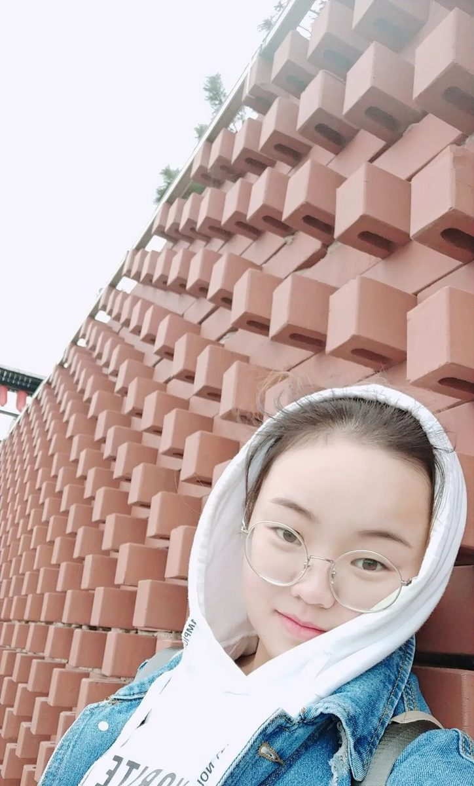
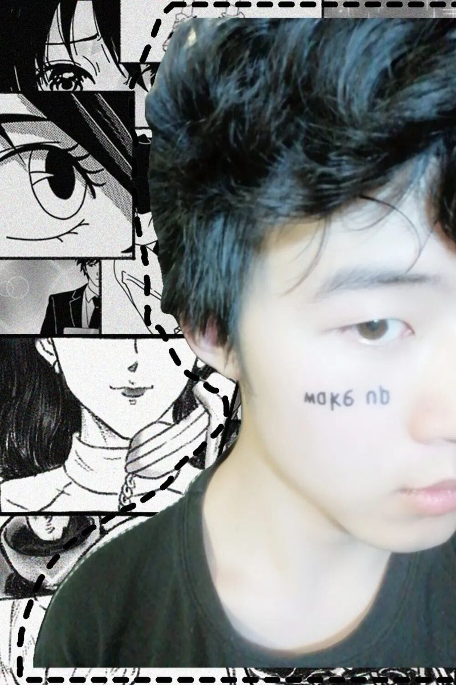
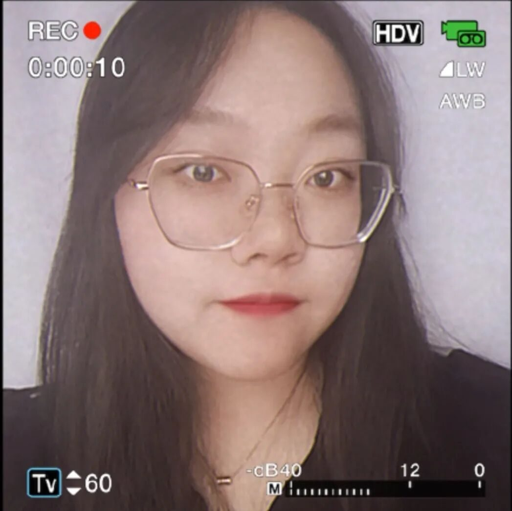
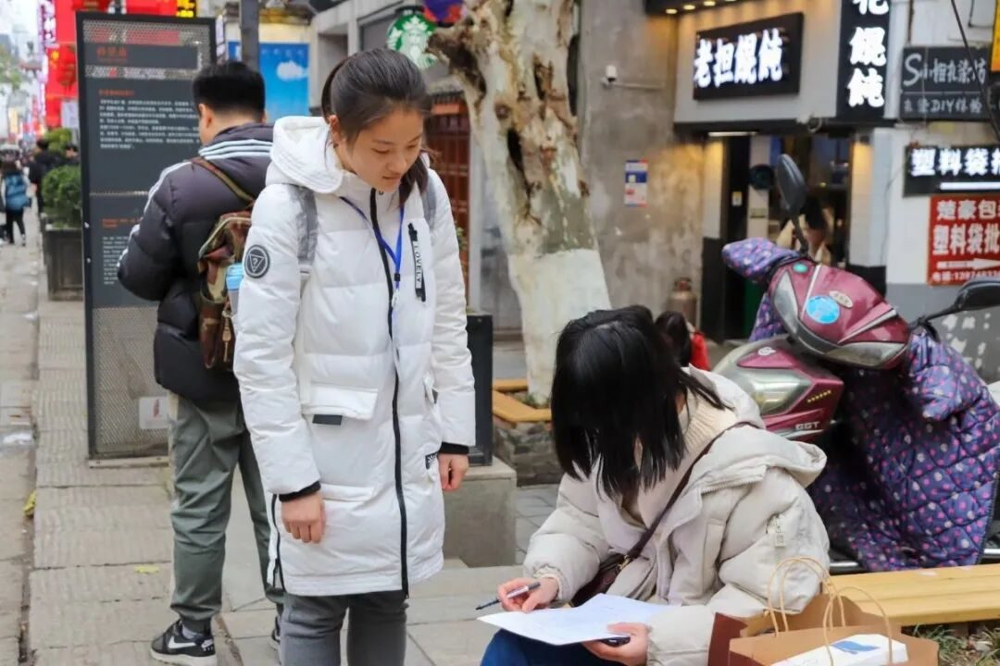
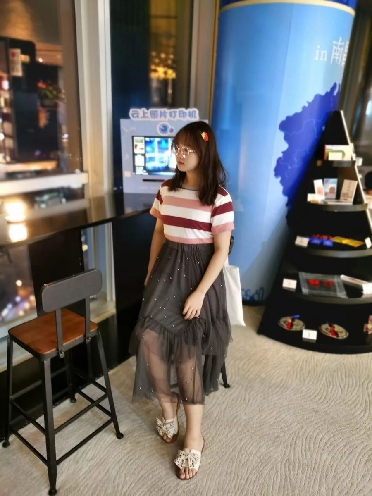
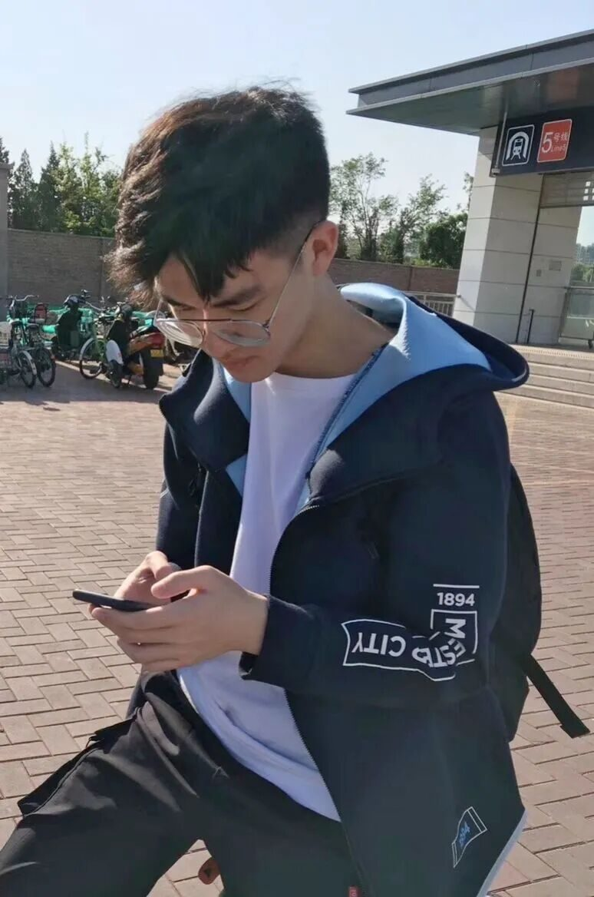
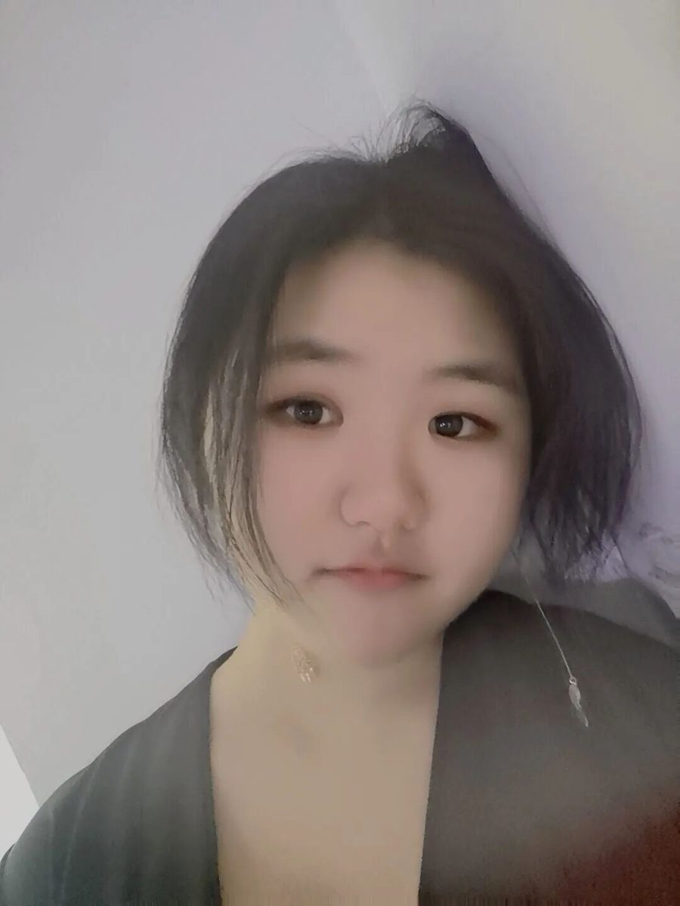

你来时冬至，肩上是风

你来时冬至，肩上是风
何为行者？
以步履丈量万水千山
倚豪情堪度流徽文脉
文溯齐鲁
知遇中原
致旅吴越
拾遗皖徽
韶忆长安
源洄渝州
言念潇湘
大地长天，远山沧海
文化苦旅，是行者的独家记忆
又是一年寒风萧瑟时节
行者们的故事翻开了新的一页
第八期行者无疆
来了！
康艳虎
骐骥一跃不能十步。
驽马十驾亦能不舍！
Carpe diem！
文字组
“一蓑烟雨自在去，
热爱终抵岁月长”


张南云
用双脚丈量世界的大小
宣传组
张清雅
执着于理想
纯粹于当下

风月都好看
人间也浪漫
调研组
王婧霖
你所不知道的远方，
都是值得一去的天堂。

调研组
王小玉
我想踏过迷茫
奔向遥远山河
外联组
付媛
人生如逆旅，
我亦是行人。


采访组
袁欣怡
平安喜乐，
温暖善良。
采访组
温兆琪
从黎明到黄昏，
阳光充足，
胜过一切过去的诗。

蔡天禹
我永远都没有长大，
但我永远都没有停止生长。
摄影组
薛政
这天下，
风景千万般，
值得觊觎一眼。

财务组
米鑫
海纳百川，
自强不息。
后勤组
孙健
不乱于心，
不困于情；
不畏将来，
不念过往。
如此，安好。
朔漠的风穿过汉时明月
挟北疆的沙砾落到行者的指尖
一梦敦煌
梵音横渡万里浮云
细细聆谂
丝路驼铃悠然回响
今夕何夕，与子同舟
与君联袂，勿却为幸
循此苦旅，以达天际
来源 | 行者无疆实践团
文字 | 行者无疆实践团
排版 | 吕丰元
审核 | 康艳虎 张清雅
行者无疆实践团
QQ：2758025831

随行者一起认识世界
长按二维码